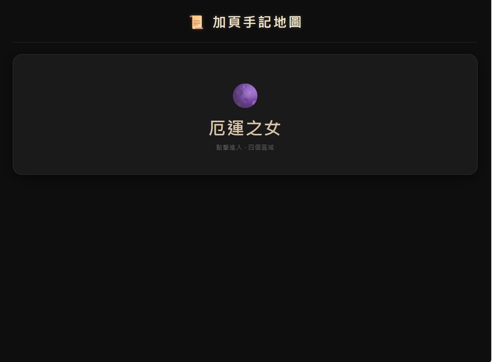
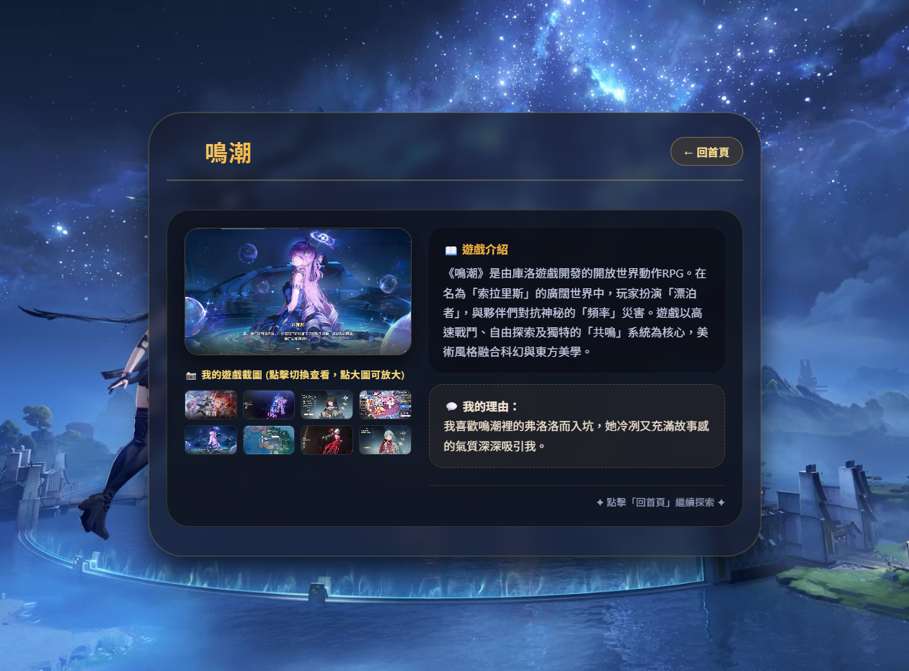

Game-style portfolio
我做的是偏遊戲感、可互動、也很有主題性的網站。
我是天香琴，喜歡把遊戲、角色、收藏和小工具做成真的可以點、可以玩、也可以逛的網站。比起純展示型頁面，我更喜歡有主題、有切換流程、也有互動感的作品。
7+
已完成專案
2D
遊戲風格偏好
互動型
作品特色

My style
主題感、互動感、分類切換與收藏式瀏覽。Featured projects
我的代表作品
這些作品最能代表我現在的方向：遊戲主題、角色感、資料整理，以及讓人願意一直點下去的互動設計。
How I build
我做網站時最在意什麼
我的作品大多不是商業官網路線，而是比較偏主題站、粉絲向、收藏型或互動小工具。
我喜歡讓網站有「可以玩」的感覺
對我來說，網站不只是排版整齊而已。能不能切換分類、點開看圖、模擬流程、或讓人想繼續探索，才是我最喜歡做的部分。
主題先行
我會先決定這個網站的世界觀、角色感或使用情境，再安排整體視覺。
流程要好點
頁面會盡量做成分類明確、按鈕清楚、讓人不會一下就迷路。
內容要有收藏感
我喜歡把圖片、角色、資料整理成值得慢慢逛的樣子，而不是只放一排文字。
What fits me
我現在最適合做的網站
這些都是我最擅長的方向，也最能發揮我的設計風格。比起標準化官網，我更喜歡做有主題、有互動、也有收藏感的網站。